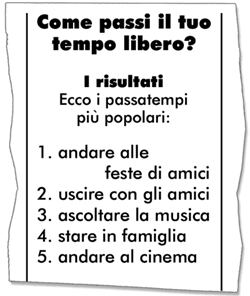

This next issue of Noi Giovani publishes the results of il sondaggio on Come passi il tuo tempo libero?
Ecco i risultati del sondaggio

Grazie a tutti i ragazzi che hanno partecipato.
The marketing company who conducted the survey is running a concorso and offering some fantastic prizes. Teenagers are invited to create an advertisement promoting a product/activity relevant to the youth leisure market.
Read the details of the concorso.
![Advertisement for a competition. It reads: Concorso, SFRUTTARE MEGLIO IL TEMPO LIBERO! Cerchiamo giovani creativi e fantasiosi per aiutarci a sfruttare meglio il tempo libero dei giovani! Sei in questa categoria? Allora cosa aspetti! La tua contribuzione è preziosa!!! Obiettivo: Suggerimenti e idee di come sfruttare meglio: le feste, uscire con gli amici, la musica, stare in famiglia, il cinema. Cosa ti interessa? Fai la tua scelta e crea una pubblicità o un volantino. Premi strepitosi! Non lasciarti sfuggire quest’ opportunità! Presentare la pubblicità entro la fine del mese.](images/ITAL1B_BK1_AW8.jpg)
Let’s complete three writing exercises in the worksheet a1.3.